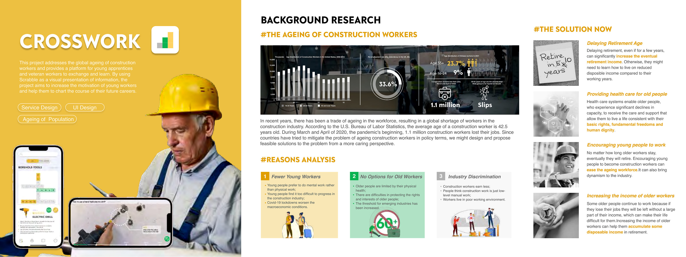
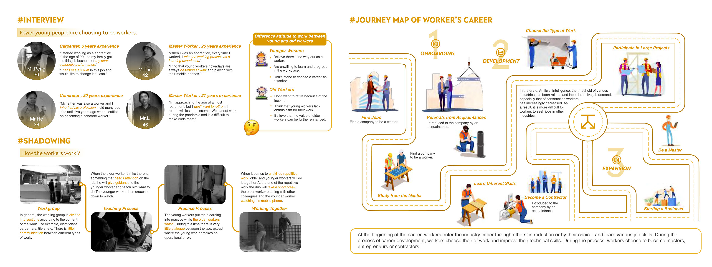
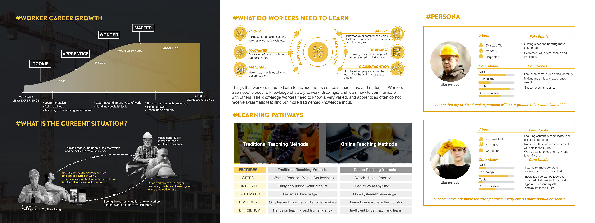
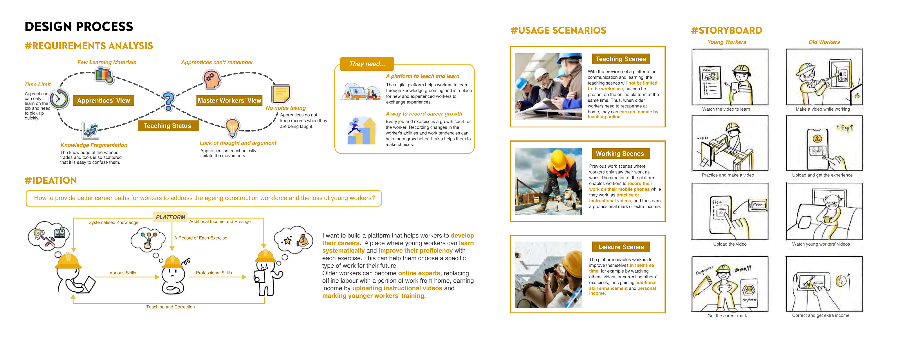
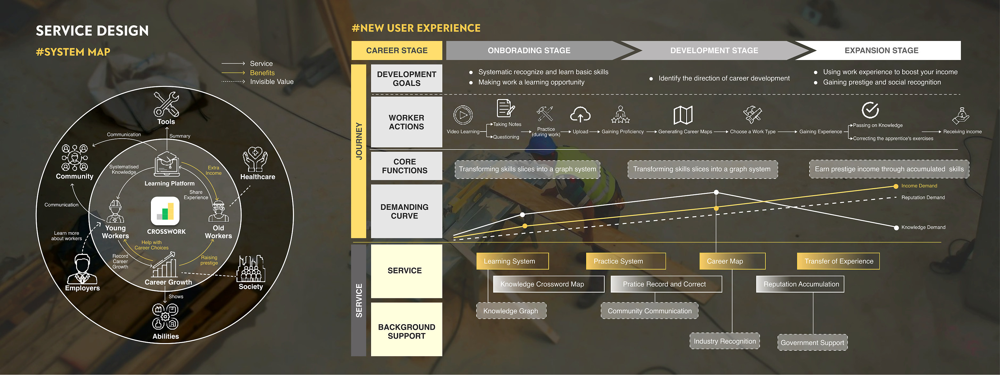
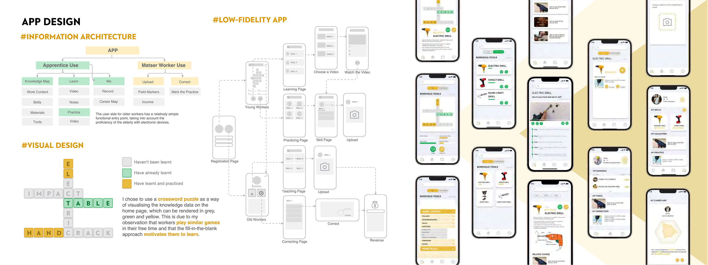
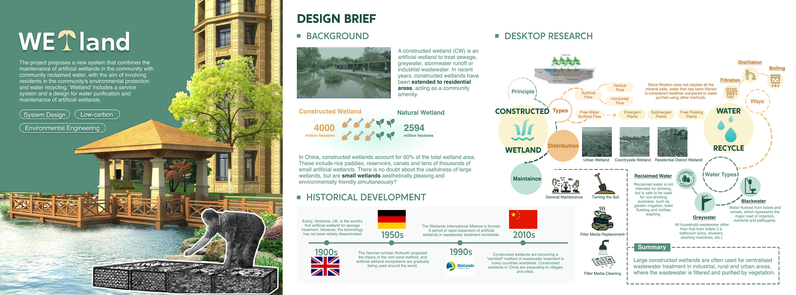
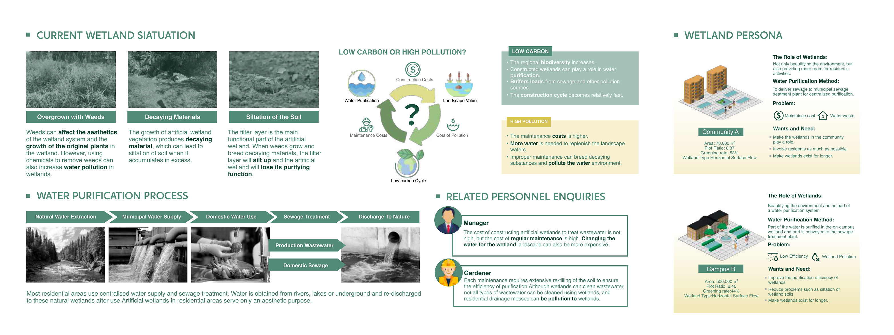
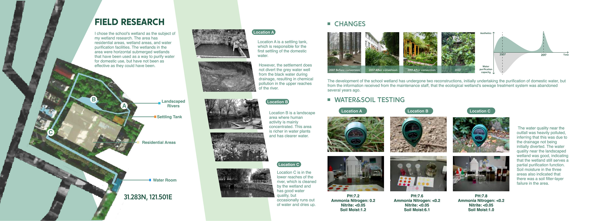
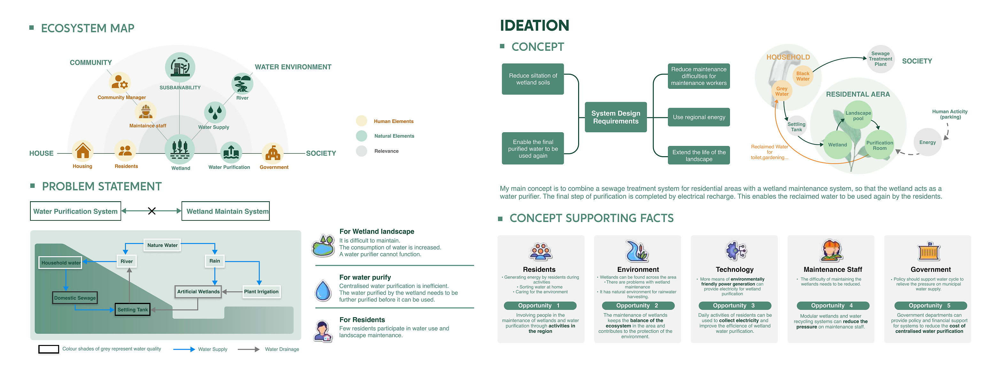
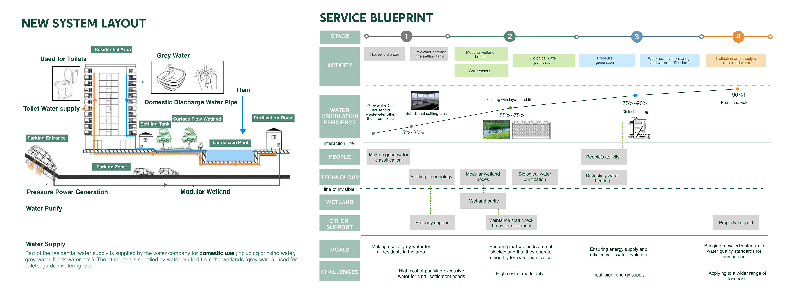
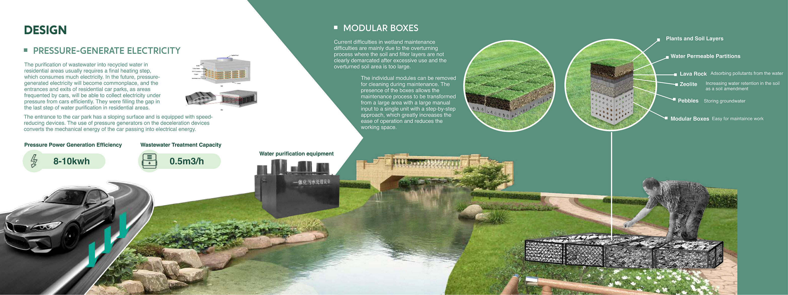
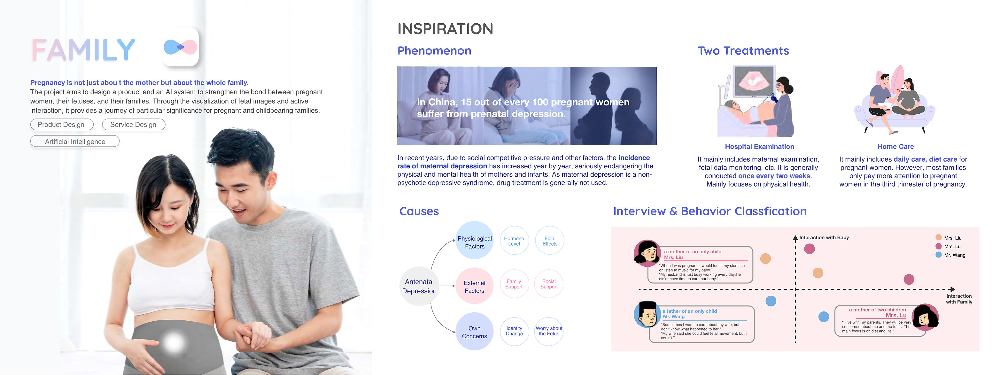
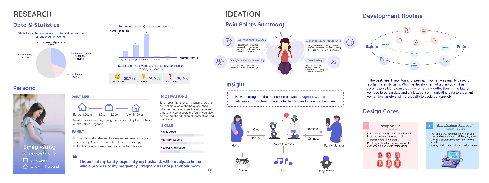
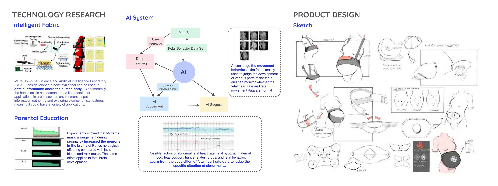
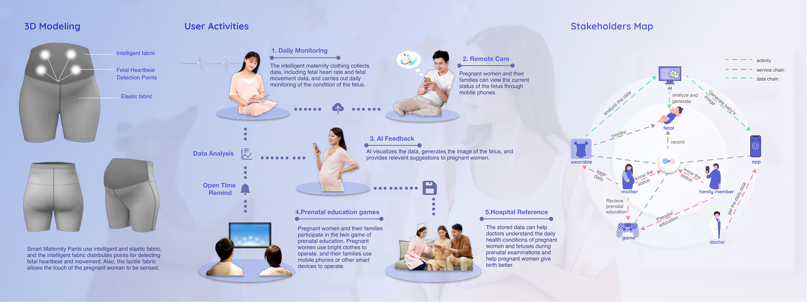
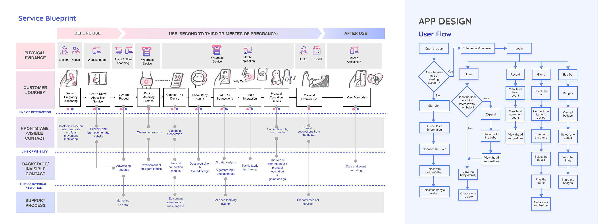
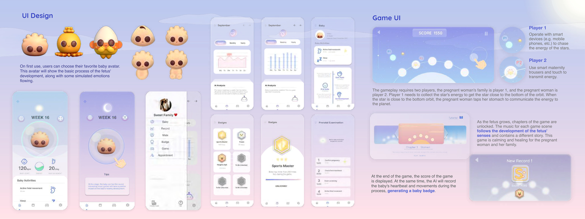
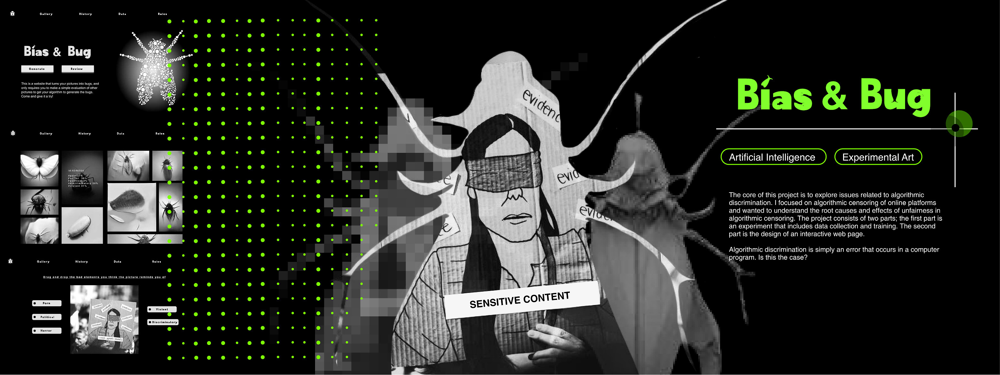
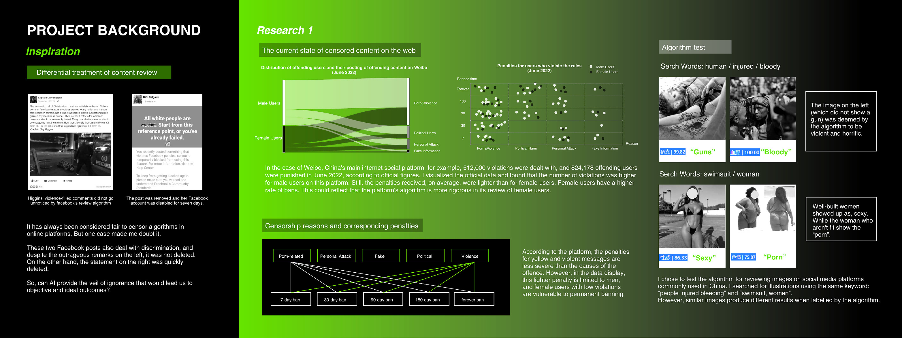
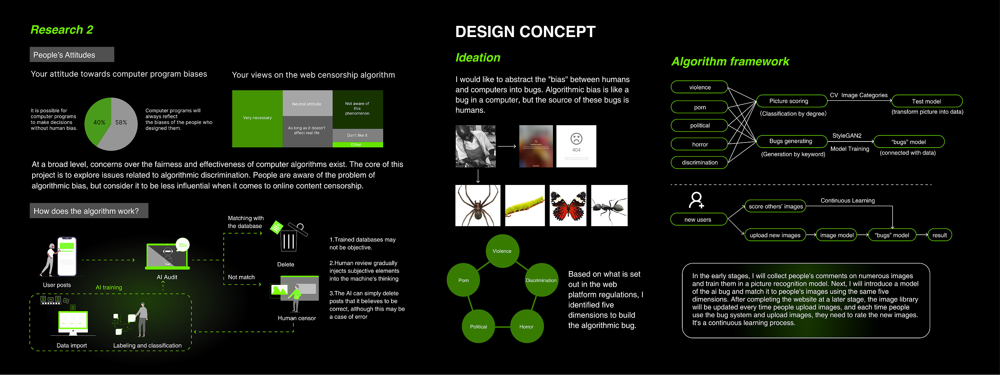
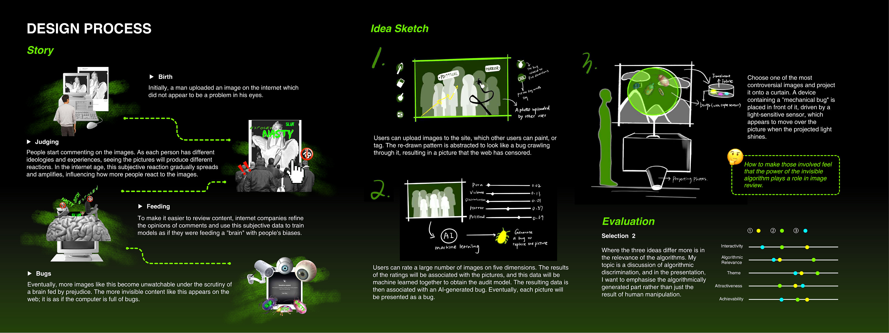
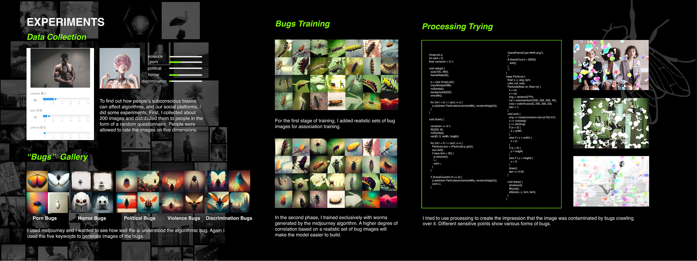
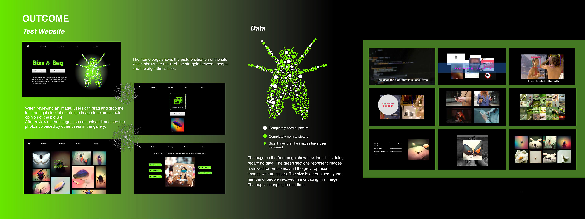
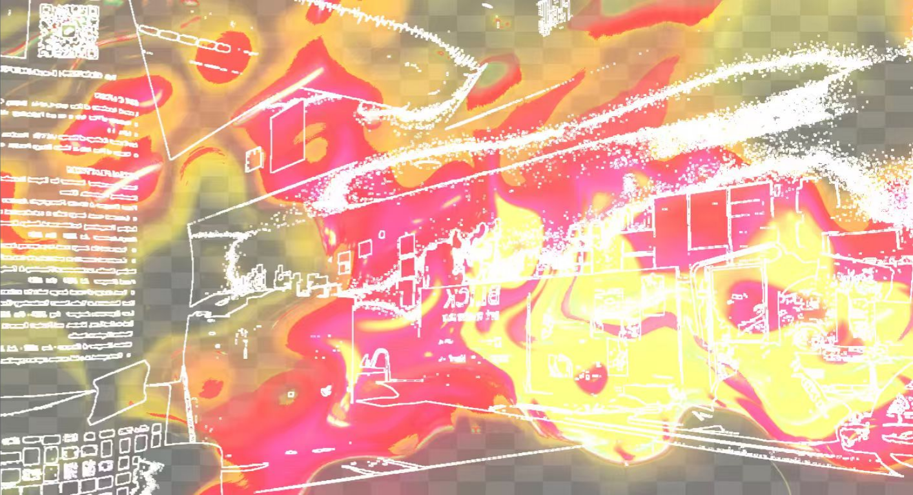
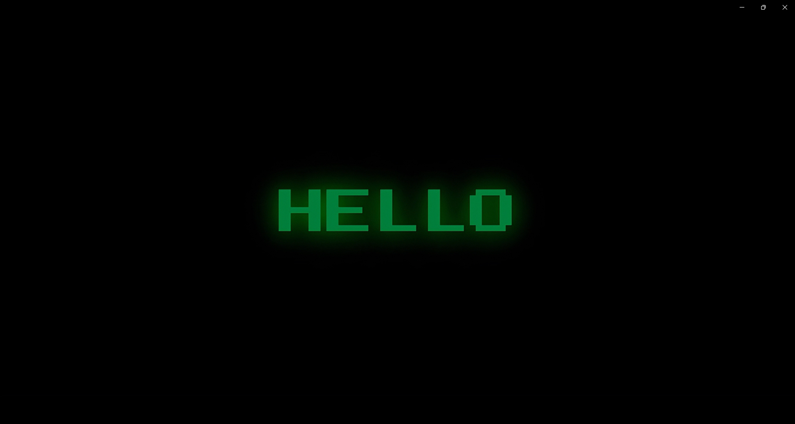
关于这款游戏
About This Game

Crosswork is a service system designed for construction workers. It combines a smart helmet, a mobile app, and training support to help workers stay safe, learn on site, record experience, and build a clearer career path.